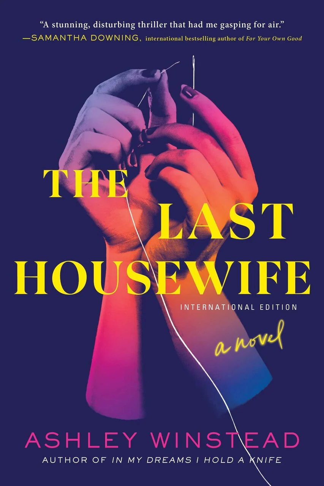

The last housewife
Autrice : Ashley Winstead
Genre: Thriller psychologique
Année de publication: 2022
Langue: Anglais

Sommaire
ATTENTION : ce roman aborde des sujets tels que les violences sexuelles, l’emprise psychologique, le suicide et la mysoginie.
Shay Deroy vit au texas avec son mari, Cal, dans une vie qui ne lui ressemble plus. Un jour, elle écoute un épisode de Transgression, un balado de fait divers animé par un ancien ami d’enfance Jamie Knight, et lui apprends que sa meilleure amie de l’université a été retrouvée pendue sur le campus. La police conclut à un suicide, mais Jamie ne le croit pas. Shay non plus. Elles étaient 3 à l’époque de l’université, et Clem est décédée dans des circonstances similaires
Elle retourne à New York pour retrouver Jamie et enquêter eux même sur la mort de Laurel.
Shay et Jamie y découvrent pire que ce qu’ils croiyaient, ce qu’elle a vécu à l’université n’est qu’une partie d’un système beaucoup plus vaste.
Critique
J’ai adoré ce livre, parmi les meilleurs que j’ai pu lire dans ma vie. Ce ne sont pas des sujet doux, mais il y a des fois ou ça en prends pour pouvoir mettre des mots sur ce qu’on vit ou faire comprendre aux autres des concepts qui leurs sont flous.
Un livre avec pleins de rebondissement, et un thriller qui glace!
Moment favori
J’adore les femmes fortes, celle là en est une particulièrement incroyable.
Moment moins fort
Ce sont des sujets très lourds, qui ne sont pas fait pour tout le monde. Ce n’est pas un petit roman léger.